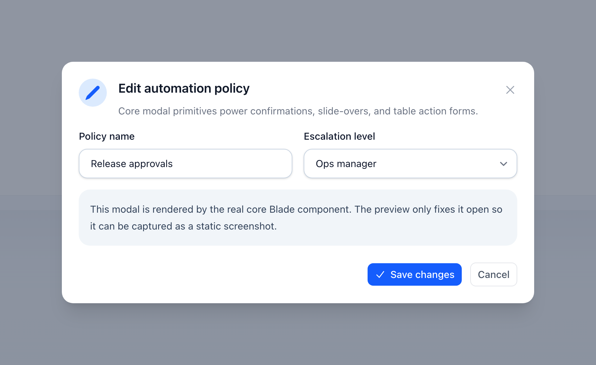

Core
Modaly
Systém modalů pro potvrzovací dialogy, slide-overy a vícekrokové wizardy.

Na této stránce
Systém modalů pro potvrzovací dialogy, slide-overy a vícekrokové wizardy.
Typy modalů
| Třída | Popis |
|---|---|
Modal |
Standardní vycentrovaný modal |
ConfirmationDialog |
Modal s tlačítky potvrdit/zrušit |
SlideOver |
Panel vysouvající se zprava |
Wizard |
Vícekrokový wizard s navigací kroků |
Potvrzovací dialog
Nejběžnější použití — spouštěné z akcí:
Action::make('delete') ->requiresConfirmation() ->modalHeading('Delete this record?') ->modalDescription('This action cannot be undone.') ->modalIcon('trash', 'danger') ->modalSubmitActionLabel('Yes, delete') ->modalCancelActionLabel('Cancel') ->action(fn ($record) => $record->delete());Slide-over
Panel se vysouvá zprava:
Action::make('details') ->slideOver() ->stickyHeader() ->stickyFooter() ->modalMaxHeight('60vh');Konfigurace modalu
Action::make('edit') // Velikost ->modalWidth('2xl') // sm, md, lg, xl, 2xl, 3xl, 4xl, 5xl, 6xl, 7xl, full // Chování zavírání ->closeModalOnClickAway() ->closeModalOnEscape() // Mobilní adaptace ->slideOverOnMobile() // bottom-sheet na mobilu, dialog na desktopu ->fullScreenOnMobile() // celá obrazovka na mobilu ->mobileBreakpoint('md'); // kde se sheet spustí (sm|md|lg)Pod mobilním breakpointem slideOverOnMobile() vykreslí modal formuláře jako
bottom-sheet, který se vysune od spodní hrany, a fullScreenOnMobile()
vyplní viewport; oba scrollují tělo uvnitř panelu, takže tlačítka patičky
zůstanou viditelná, a oba nechají vycentrovaný dialog na desktopu beze změny. Sheety přidávají
safe-area padding, úchyt pro zavření tažením a focus trap automaticky.
Breakpoint je ve výchozím stavu globální wire-core.mobile.breakpoint (sm, tj.
< 640px) a lze ho zvýšit per akce pomocí ->mobileBreakpoint('md') (< 768px,
zahrnuje malé tablety) nebo 'lg' (< 1024px). Globální výchozí viz
Konfigurace → Mobil.
Modal config objekty
Místo fluent ->modal*() setterů lze akci nakonfigurovat z
deklarativního modal objektu. Předejte jakýkoli ModalContract — Modal, SlideOver,
ConfirmationDialog nebo Wizard — do ->modal():
use NyonCode\WireCore\Modals\ConfirmationDialog;use NyonCode\WireCore\Modals\Modal;use NyonCode\WireCore\Modals\SlideOver;use NyonCode\WireCore\Modals\Wizard; // Vycentrovaný dialogAction::make('edit')->modal( Modal::make() ->heading('Edit record') ->description('Update the details below') ->width('lg') ->icon('pencil', 'primary') ); // Slide-over panel (->mobileOnly() = slide-over na mobilu, modal na desktopu)Action::make('view')->modal( SlideOver::make()->heading('Details')->width('xl') ); // Potvrzovací dialog — s presety (delete / makeDanger / makeWarning / makeInfo)Action::make('delete')->modal( ConfirmationDialog::delete('User') ); // Vícekrokový wizard (viz níže)Action::make('create')->modal( Wizard::make()->heading('Create user')->steps([/* ModalStep::make(...) */);Hodnoty config objektu se přeloží do modal stavu akce a vykreslí přes stejný runtime jako fluent settery — existuje jediný kanonický vlastník modalu, takže se oba styly chovají identicky.
Akce v patičce
Vlastní tlačítka v patičce modalu:
use NyonCode\WireCore\Actions\ModalFooterAction; Action::make('edit') ->form([...]) ->modalFooterActions([ ModalFooterAction::make('save') ->label('Save') ->color('primary') ->submitsForm(), ModalFooterAction::make('save-and-close') ->label('Save & Close') ->action(fn () => $this->saveAndClose()), ModalFooterAction::make('cancel') ->label('Cancel') ->color('gray') ->outlined() ->closesModal(), // zavře modal ModalFooterAction::make('reset') ->requiresConfirmation() // zeptá se před spuštěním (nativní wire:confirm) ->confirm('Really reset the form?') // …nebo s vlastní zprávou ->action(fn ($set) => $set('name', '')), ]);Vícekrokový wizard
Dejte akci více kroků pomocí ->steps([...]) (nebo Wizard objektu přes
->modal()). Modal vykreslí indikátor kroků s navigací Back / Next / Submit;
každý krok validuje před postupem, data jsou sdílená napříč všemi
kroky a finální odeslání znovu zvaliduje každý krok.
use NyonCode\WireCore\Actions\ModalStep; Action::make('create') ->steps([ ModalStep::make('Basic Info') ->description('Enter user details') ->icon('user') ->schema([ TextInput::make('name')->required(), TextInput::make('email')->email()->required(), ]) ->validation(['name' => 'required|min:2']), // extra pravidla per krok ModalStep::make('Settings') ->schema([ Select::make('role')->options([...]), Toggle::make('active'), ]) ->afterValidation(fn (array $data) => logger('step 2 passed', $data)), ModalStep::make('Review') ->before(fn (array $data) => ['summary' => "Creating {$data['name']}"]) // předvyplnit ->schema([ Placeholder::make('summary') ->content(fn ($data) => $data['summary'] ?? ''), ]), ]) ->action(fn ($record, $data) => User::create($data));Každý krok zapisuje do stejného form-data bagu, takže dříve zadané hodnoty přetrvají,
jak se uživatel pohybuje tam a zpět. Validace na Next spustí field pravidla kroku
(přes form runtime), pak jakákoli pravidla ->validation(), pak
hook afterValidation; hook before dalšího kroku může vrátit pole, aby ho
předvyplnil. Submit znovu zvaliduje každý krok kumulativně (hooky
afterValidation se nespouští znovu, takže nikdy nevystřelí dvakrát).
Přizpůsobení labelů navigace
Labely wizardu Back, Next a submit-in-progress Saving… jsou
konfigurovatelné a spadají na přeložitelné výchozí hodnoty
(wire-core::actions.{wizard_previous,wizard_next,submit_saving}):
Action::make('create') ->steps([/* ... */]) ->modalPreviousActionLabel('Back') ->modalNextActionLabel('Continue') ->modalSubmitActionLabel('Create user') ->modalSavingLabel('Creating…');modalFooterActions() se vykreslí
i v patičce wizardu, vedle Back / Next / Submit.
Sestavení kroku z dřívějších dat
Předejte Closure do ->schema() pro sestavení polí kroku z hodnot zadaných v
předchozích krocích. Closura dostane naakumulovaný form-data bag, takže pozdější krok
se může přizpůsobit dřívější volbě. Funguje to pro řádkové, hromadné i hlavičkové akce —
hlavičková akce nenese žádný záznam, takže její step closury stále dostanou živý
form-data bag (ne null):
HeaderAction::make('create') ->steps([ ModalStep::make('Type') ->schema([ Select::make('kind') ->options(['business' => 'Business', 'person' => 'Person']), ]), ModalStep::make('Details') // $data drží vše zadané doposud (zde: 'kind' z kroku 1). ->schema(fn (array $data) => [ TextInput::make('name')->required(), ...($data['kind'] === 'business' ? [TextInput::make('vat_id')->required()] : [TextInput::make('birth_date')]), ]), ]) ->action(fn (array $data) => Customer::create($data));API ModalStep
ModalStep::make(string $label) ->description(?string $description) ->icon(string|Icon|null $icon) ->schema(array|Closure $fields) ->validation(array|Closure $rules) // extra pravidla, klíčovaná názvem pole ->validationMessages(?array $messages) ->afterValidation(Closure $callback) // běží po validaci kroku ->before(Closure $callback) // běží před zobrazením kroku; vrátit pole pro předvyplněníHalt modal
ActionHalt vytvoří sekundární potvrzovací modal uprostřed vykonávání:
Action::make('process') ->before(function ($record, Action $action) { if ($record->has_warnings) { $action->halt() ->heading('Warnings Detected') ->body('There are unresolved warnings. Continue anyway?') ->icon('exclamation', 'warning') ->submitLabel('Continue') ->cancelLabel('Cancel') ->width('md'); } }) ->action(fn ($record) => $record->process());API ActionHalt
->heading(string $heading)->body(string $body)->icon(string $icon, ?string $color)->submitLabel(string $label)->cancelLabel(string $label)->width(string $width)->validation(array $rules) // zvalidovat data formuláře před pokračovánímBlade komponenty
<x-wire-modals::modal /><x-wire-modals::confirmation />